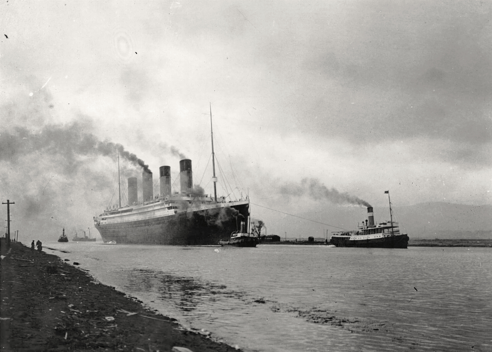
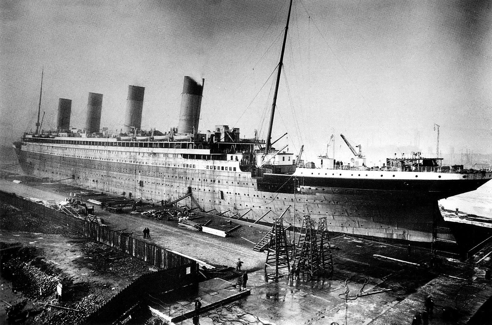
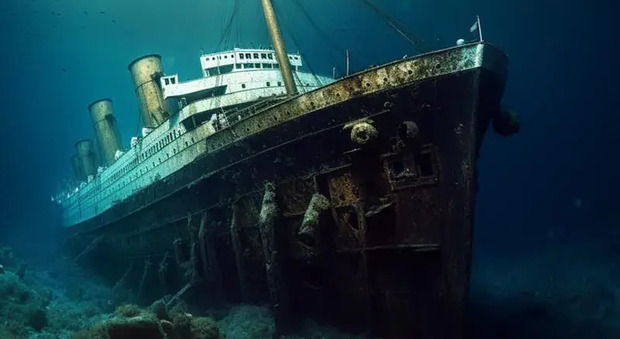
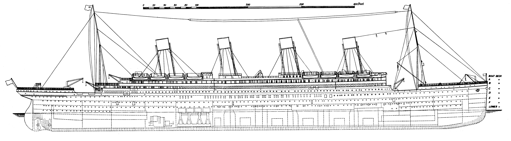

L'RMS Titanic è stato un transatlantico britannico della classe Olympic, divenuto celebre per essere naufragato nelle prime ore del 15 aprile 1912, durante il suo viaggio inaugurale, a causa della collisione con un iceberg
Secondo di un trio di transatlantici, il Titanic, assieme ai suoi due gemelli RMS Olympic e HMHS Britannic, era stato progettato per offrire un collegamento settimanale di linea con l'America e garantire il dominio delle rotte oceaniche alla White Star Line
Durante il suo viaggio inaugurale (da Southampton a New York, via Cherbourg e Queenstown) ebbe una collisione con un iceberg alle 23:40 (ora della nave) di domenica 14 aprile 1912, evento che provocò l'apertura di alcune falle sotto la linea di galleggiamento, allagando i primi cinque compartimenti stagni, il gavone di prua, tutte e tre le stive postali e il locale della caldaia 6 del transatlantico. L'allagamento, 2 ore e 40 minuti più tardi, provocò l'inabissamento della nave (alle 2:20 del mattino del 15 aprile), facendola spezzare in due tronconi



